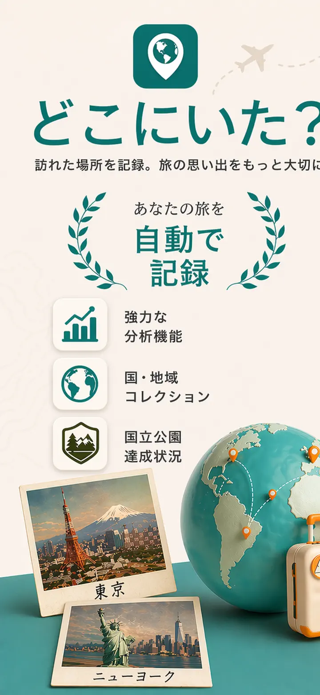
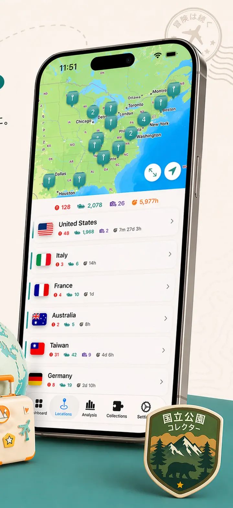
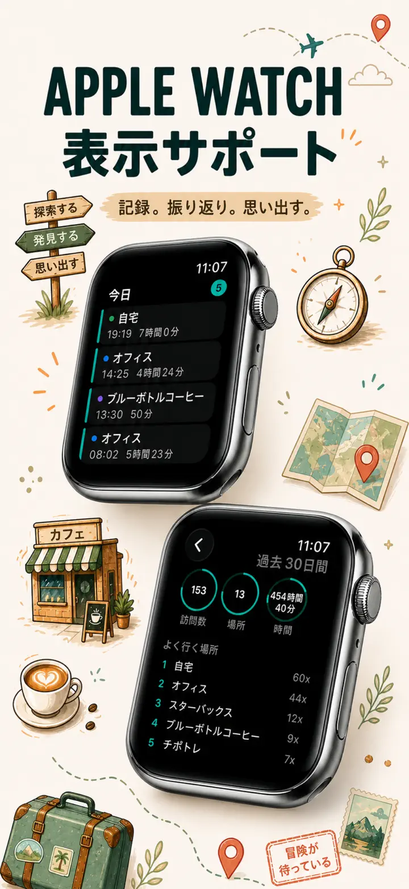
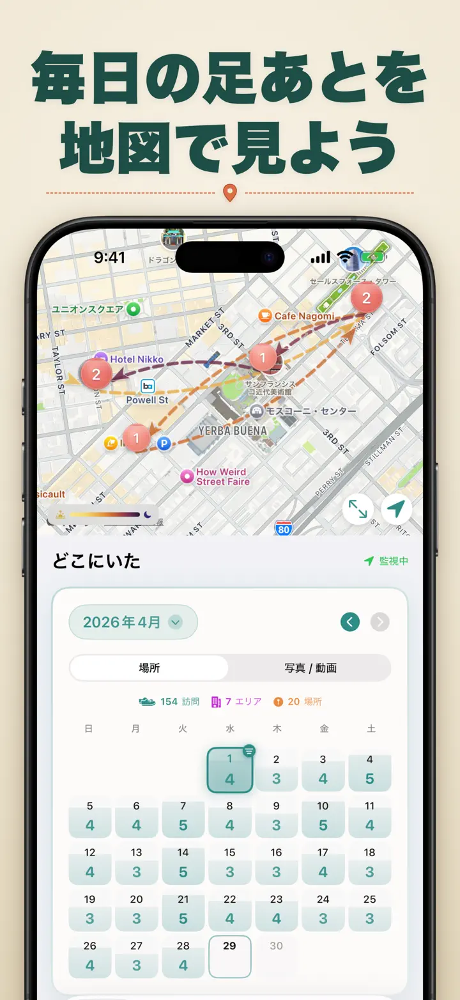
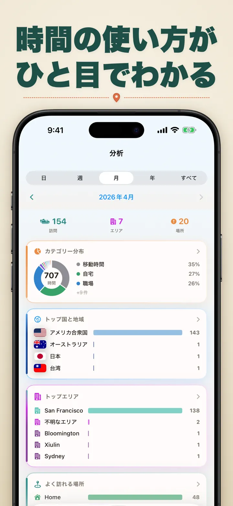
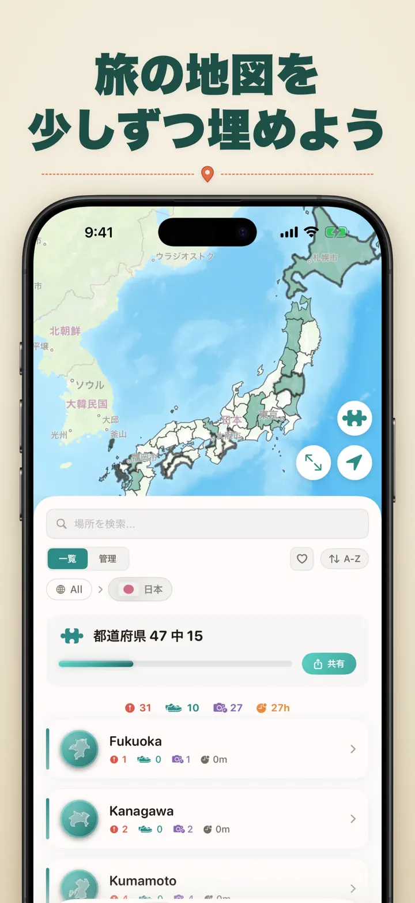
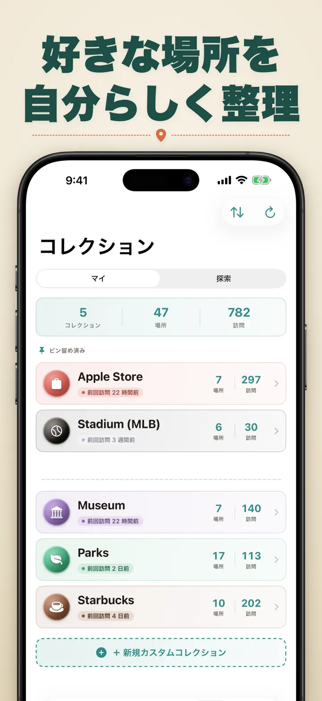
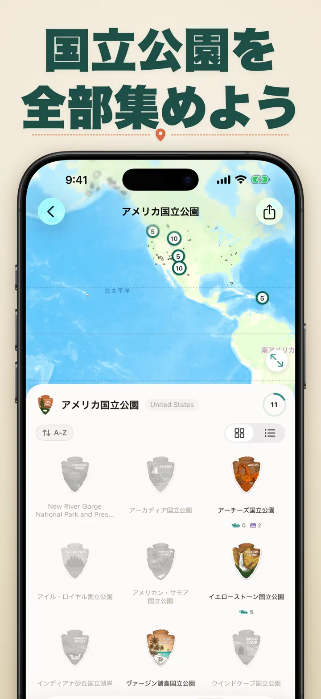
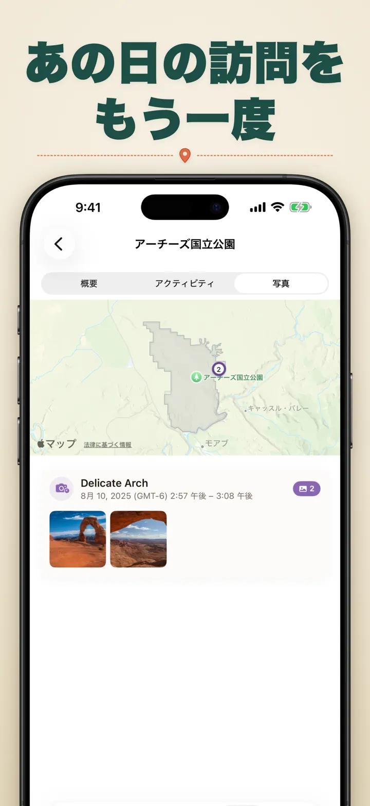

どこにいた?
位置記録と場所・写真の記録と足跡管理
新登場：全国一の宮103社、それぞれに木彫りのバッジ。訪問履歴を自動で記録し、プライベートなタイムラインをすべて端末内に。
App Storeからダウンロード
アプリについて
どこにいた — あなたの位置情報メモリー
先月行ったあの素敵なレストラン、どこだったっけ？オフィスと自宅、どっちで過ごす時間が長い？「どこにいた」は訪問履歴を自動で記録し、あなたの日々を美しいタイムラインで振り返れるアプリです。
自動トラッキング
手動での入力は不要。アプリがバックグラウンドで到着・出発を記録し、あなたの行動履歴を自動で作成します。
スマートカレンダー
日・週・月単位で訪問履歴を確認。カレンダー上で訪問回数やユニークな場所が一目でわかります。日付をタップすれば、その日の行動がすぐに確認できます。
ホーム画面・ロック画面ウィジェット
中サイズのホーム画面ウィジェットなら、最新の訪問が一目で確認できます。ロック画面ウィジェットには現在地、リアルタイムの滞在時間、または今日の訪問回数を表示 — タップすればすぐにアプリへ戻れます。
整理された場所リスト
訪問先は地域や都市ごとに自動で整理。自宅、職場、ジム、カフェなど、好きなカテゴリーを設定できます。アイコンやカラーもカスタマイズして、自分らしく管理しましょう。
パワフルな分析機能
生活パターンを発見：
- カテゴリー別の時間配分
- よく行く場所ランキング
- 週間リズム分析
- 訪問頻度の傾向
- 場所ごとの滞在時間グラフ — 日・週・月・年単位で平均滞在時間を確認
国・地域コレクション
旅がパズルになる！訪れた国の州・都道府県・地域をどれだけ制覇したか確認できます。探索の進捗を美しいパズル画像として友人や家族とシェアして、次の旅への意欲を引き出しましょう。
国立公園の進捗
大自然を制覇しよう！国立公園への訪問を自動で記録し、探索の進捗を日常の位置履歴と一緒に管理できます。
日本100名城
日本を旅していますか？「日本100名城」を自動で記録できる新しい内蔵コレクション。コレクションタブ → 探索 → 日本から見つけられます。
カスタムコレクション
追跡したいものは何でもOK — Apple Store、美術館、クラフトビール醸造所、本屋など。コレクションを作成してキーワードを設定するだけで、自動的に貯まっていきます。手動での追加・削除もいつでも可能。各コレクションには訪問数、訪問履歴、マップが表示されます。
位置履歴のインポート
他のアプリから乗り換えですか？すべての履歴をそのまま持ち込めます — フォーマットは自動で判別、大容量エクスポートにも対応し、インポート前にプレビューで確認できます：
- Google Timeline（Google Maps のエクスポートまたは Google Takeout）
- Arc Timeline（Arc からエクスポートする月次の .json ファイル）
- Moves（ProtoGeo／Facebook Moves のバックアップ）
一括管理
すべての場所を一か所で管理。検索、並べ替え、フィルタリング。複数の場所を選択してまとめてカテゴリー分けや削除が可能。ロケーションライブラリを整理整頓。
プライバシー最優先
位置情報データは端末内に保存。アカウント登録不要。サーバーへのデータ送信なし。あなたの行動はあなただけのもの。
こんな方におすすめ：
- 勤務時間や勤務地の記録
- 行ったお店やレストランの記録
- 日常のルーティン分析
- 旅の記録・国立公園訪問の記録
- 経費精算や走行距離の記録
- 時間の使い方の把握
機能一覧：
- 到着・出発の自動検出
- カレンダー表示と日別タイムライン
- ディープリンク対応のホーム画面・ロック画面ウィジェット
- 地域・都市別の場所グループ化
- アイコン・カラー付きカスタムカテゴリー
- Apple Mapsからのカテゴリー提案
- 滞在時間付きの詳細な訪問履歴
- 場所ごとの滞在時間グラフ（日／週／月／年）
- インサイト付き分析ダッシュボード
- 場所の検索・フィルター機能
- 国・地域コレクション（シェア可能なパズル画像付き）
- 国立公園の訪問進捗トラッキング
- 「日本100名城」内蔵コレクション
- カスタムコレクション（キーワード自動マッチング、手動編集、統計表示）
- 一括管理機能
- Google Timeline、Arc Timeline、Moves からのインポート
- エクスポート機能
- アカウント登録不要
- プライバシー重視の設計
今日からロケーションメモリーを始めよう。「どこにいた」をダウンロードして、大切な思い出を残しましょう。
Privacy Policy: https://masawata.net/privacy-policy.html Terms Of Service: https://www.apple.com/legal/internet-services/itunes/dev/stdeula/
スクリーンショット








どこにいた?
新登場：全国一の宮103社、それぞれに木彫りのバッジ。訪問履歴を自動で記録し、プライベートなタイムラインをすべて端末内に。
App Storeからダウンロード